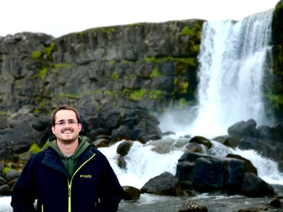

Hello there! My name is Matthew but everyone calls me Matt.
This is version 2 of my website. I am sure there will be more.....
I originally built this site while I was laid off,
1. Because I was curious on how a website worked. (Everyone said you had to spend money on it)
2. Because I am stubborn and told people I was going to do it.
3. Because it turns out I can.
I still am not completely sure what this site will be. There are several options and things I would like to add. Right now my list of goals (in no particular order are):
1. About me
2. My travel, both where I have been and where I want to go.
3. Cooking recipes and advice, things I have tried and things I am still working on.
4. A PokemonGo database where I can compile and calculate movesets and stats
5. A landing page for financial algorithms. I want to learn more about markets
6. Maybe a few games... why not everyone loves games!
7. I am sure something else will come up.
I think the items I have chosen here say a lot about me but I wil add a bit more here. I live with my wonderful girlfriend Zannah and our dog Archer in the house we bought in the Lawrenceville neighborhood of Pittsburgh.
I have a bachelors degree in Mechanical Engineering from Penn State. I have spent most of my career in the oil and gas industry, but have recently transitioned to something a bit more modern.
I am currently an Autonomous Systems Engineer for Uber ATG (and I absolutely love it)
Growing up I hated computers, I could never get them to do what I wanted, or they were just to complex for me to understand what they were doing. I have been working on that, and because of Zan; I have built my own server and use it to host this page.
There are a lot of things on my mind that I want to accomplish, I am still working on figuring out how to get them all done, but stay tuned. If there is one thing I have leared in my life, its to always bet on myself.
There is a long term plan for this site (well more like an idea of a plan, but for right now I am just putting what I have out there.)
